关键数字
两源对照
只列出两个源都存在的指标；数值直接取自 outputs/key_numbers.json。
| 指标 | DS-XM | DS-SH |
|---|---|---|
| trip rows | 220,675 | 102,361 |
| duplicate rate | 0.0000 | 0.0000 |
| abnormal duration share | 0.0286 | 0.0005 |
| grid cells | 169 | 255 |
| time buckets | 20 | 743 |
| zero-departure share | 0.2976 | 0.7639 |
| total departures | 195,682 | 99,920 |
| out_count baseline MAE | 7.0754 | 0.5336 |
| out_count model MAE | 7.3755 | 0.5103 |
| in_count baseline MAE | 6.9712 | 0.5396 |
| in_count model MAE | 6.7322 | 0.5129 |
| replenish candidates | 35 | 124 |
| clear candidates | 134 | 131 |
| rule unmet requests | 3,617 | 181 |
| optimized unmet requests | 3,669 | 170 |
| rule distance bike-km | 855.7733 | 3,559.4208 |
| optimized distance bike-km | 804.3799 | 3,547.0926 |
| rule composite cost | 3,788.1547 | 892.8842 |
| optimized composite cost | 3,829.8760 | 879.4185 |
| rule replay frames | 4 | 149 |
| rule replay cells | 169 | 255 |
| rule replay moves | 17 | 1,404 |
| rule service rate | 0.9136 | 0.9937 |
| optimized replay frames | 4 | 149 |
| optimized replay cells | 169 | 255 |
| optimized replay moves | 13 | 1,409 |
| optimized service rate | 0.9123 | 0.9941 |
策略对比（同一回放条件）
S-RULE 与 S-OPT 在同一份需求预测、同一初始库存与容量假设下回放；
差异只在调度规则。数值取自 outputs/key_numbers.json，逐帧明细见
XM 播放器 与 SH 播放器。
| 指标 | DS-XM | DS-SH |
|---|---|---|
| rule unmet requests | 3,617 | 181 |
| optimized unmet requests | 3,669 | 170 |
| rule distance bike-km | 855.7733 | 3,559.4208 |
| optimized distance bike-km | 804.3799 | 3,547.0926 |
| rule composite cost | 3,788.1547 | 892.8842 |
| optimized composite cost | 3,829.8760 | 879.4185 |
| rule service rate | 0.9136 | 0.9937 |
| optimized service rate | 0.9123 | 0.9941 |
图表
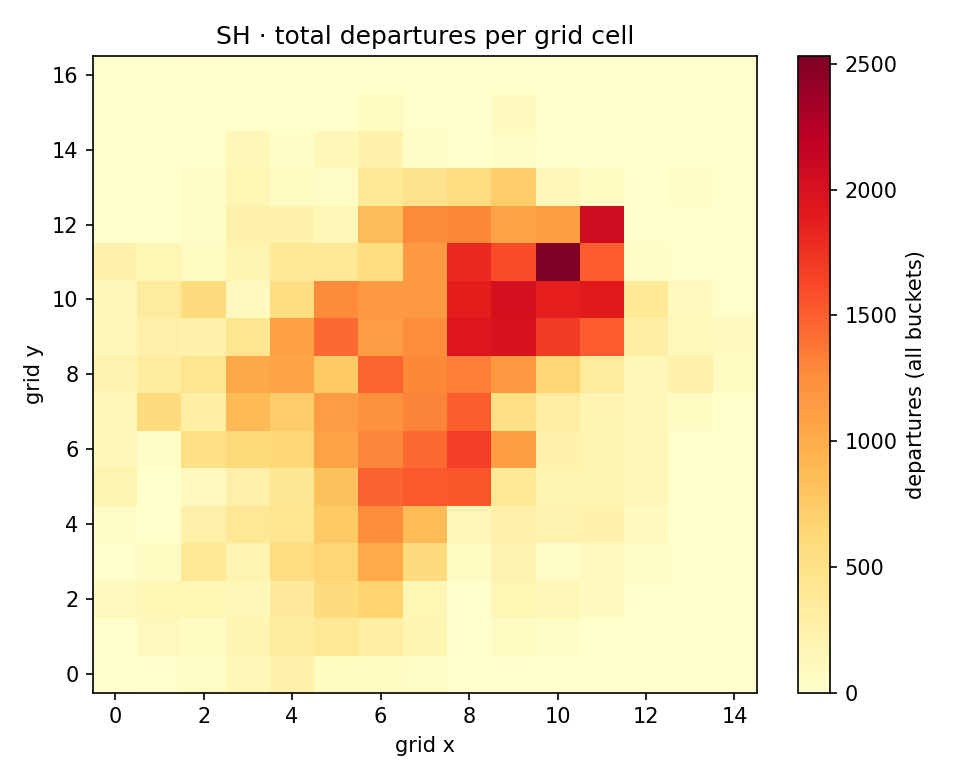
figures/demand_heatmap.sh.png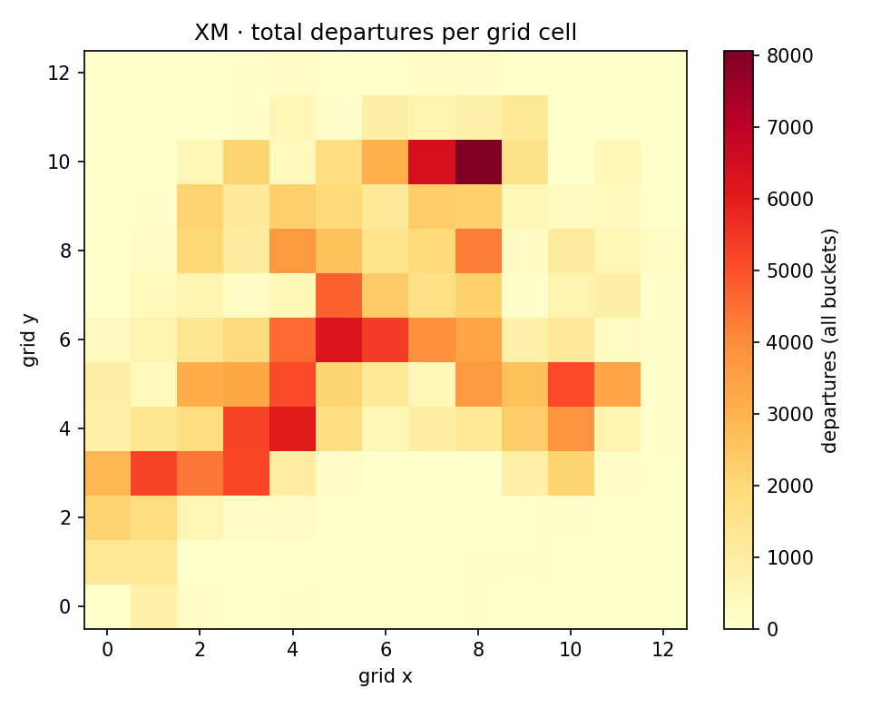
figures/demand_heatmap.xm.png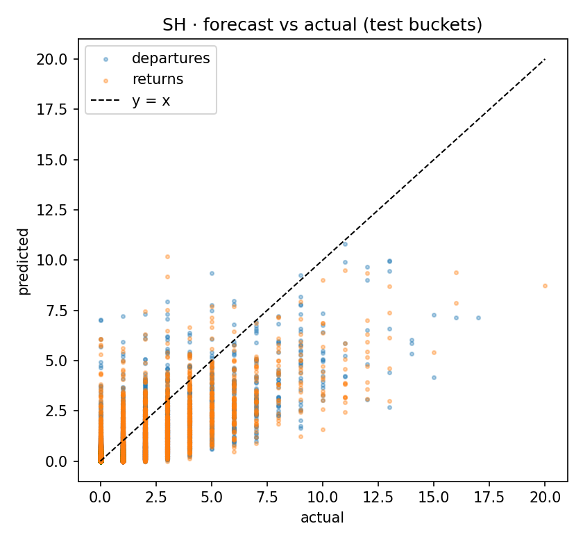
figures/forecast_vs_actual.sh.png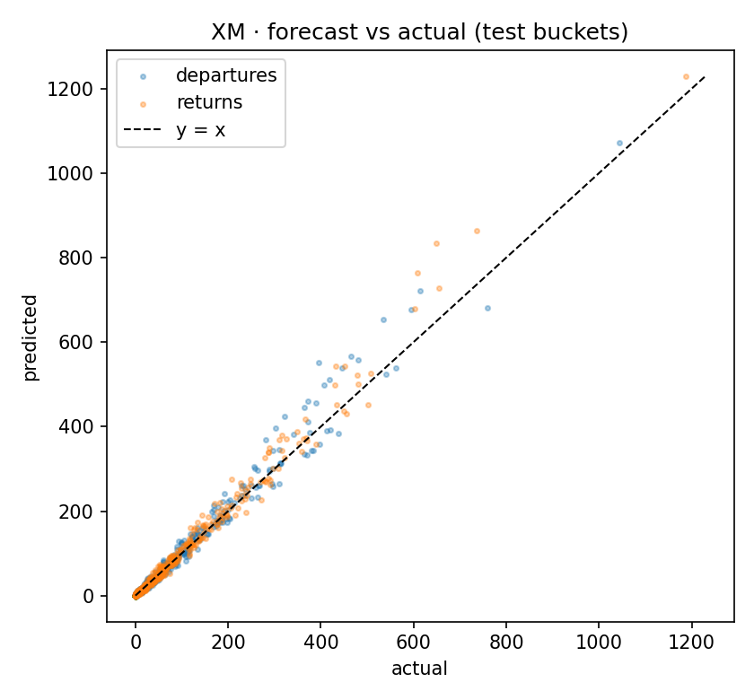
figures/forecast_vs_actual.xm.png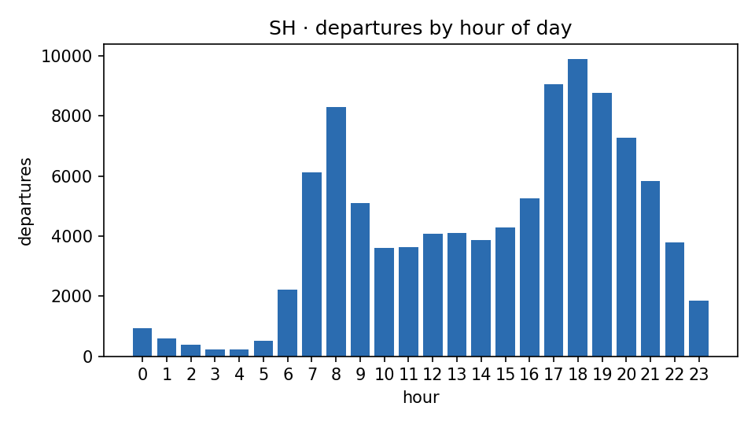
figures/peak_hours.sh.png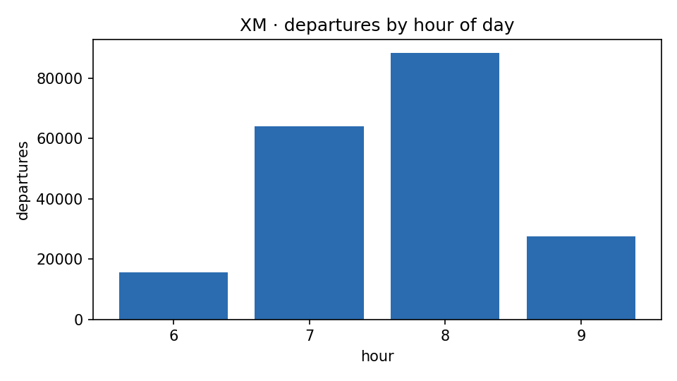
figures/peak_hours.xm.png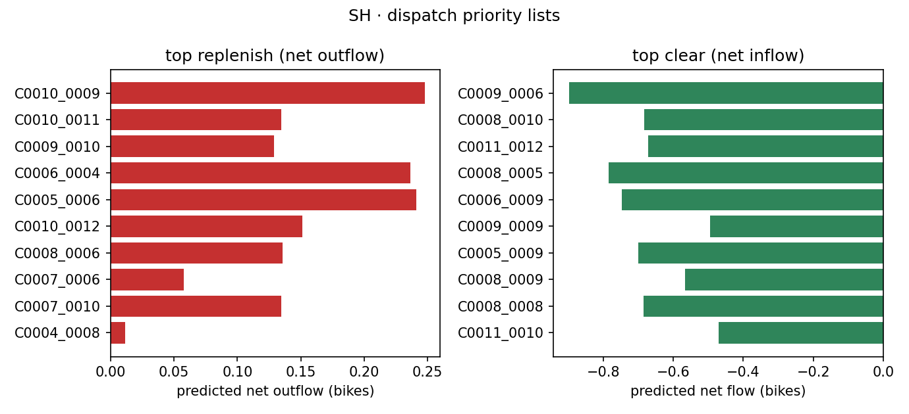
figures/priority_lists.sh.png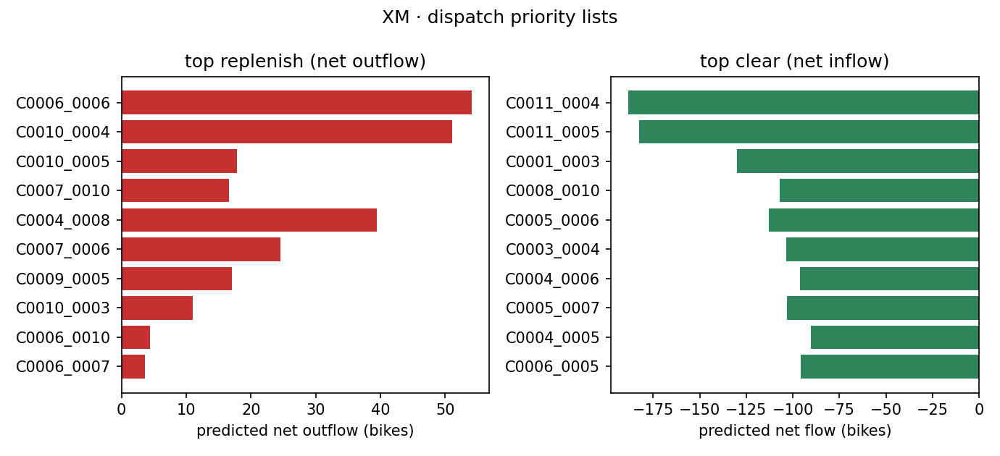
figures/priority_lists.xm.png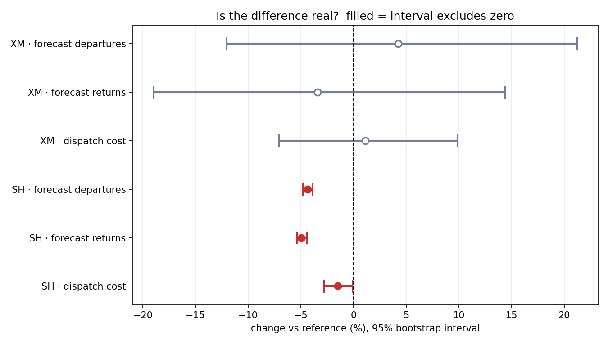
figures/significance.png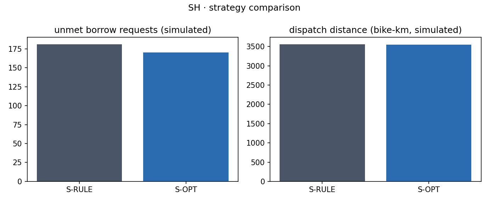
figures/strategy_comparison.sh.png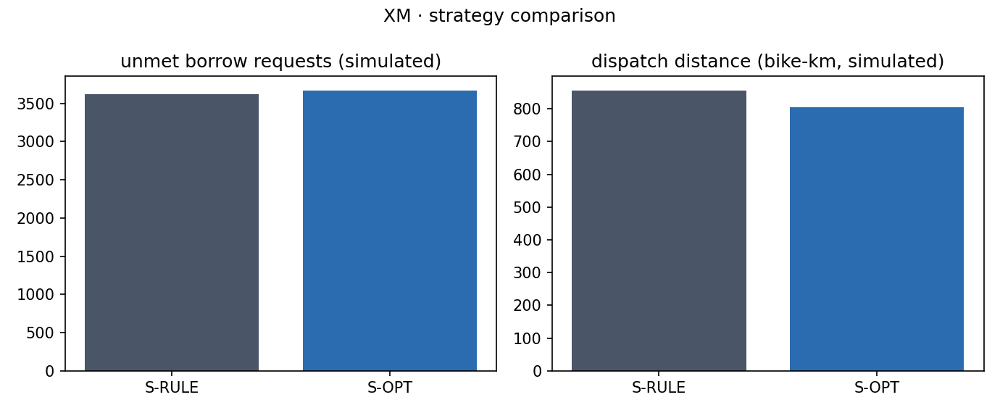
figures/strategy_comparison.xm.png